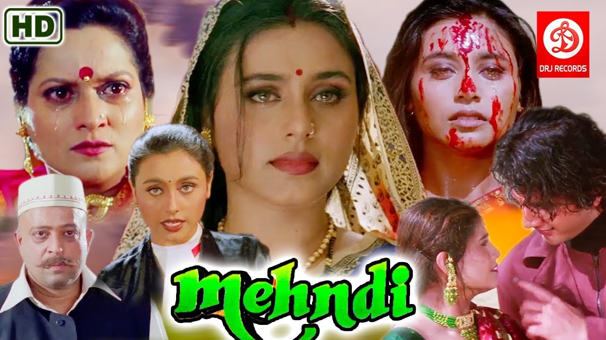
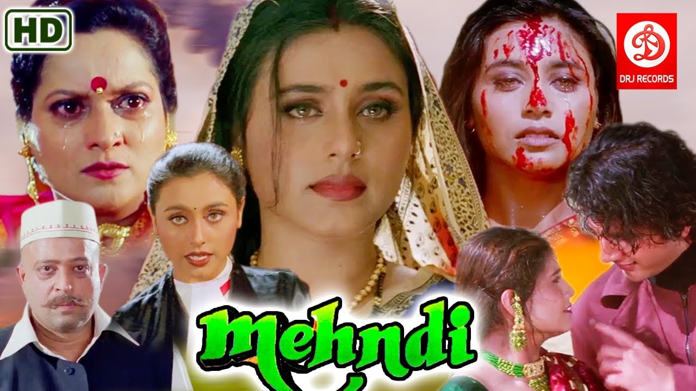

Rani Mukerji (pronounced [raːni mʊkʰərdʒi]; born 21 March 1978) is an Indian actress who works in Hindi films. A recipient of multiple accolades, including seven Filmfare Awards, her roles have been cited in the media as a significant departure from previous screen portrayals of Indian women. Mukerji has featured in listings of the most popular and highest-paid actresses of the 2000s. [1][2] Although Mukerji was born into the Mukherjee-Samarth family, in which her parents and relatives were members of the Indian film industry, she did not aspire to pursue a career in film. As a teenager she dabbled with acting by starring in her father Ram Mukherjee's Bengali-language film Biyer Phool and in the social drama Raja Ki Aayegi Baraat (both 1996). Mukerji had her first commercial success with the action film Ghulam (1998) and breakthrough with the romance Kuch Kuch Hota Hai (1998). Following a brief setback, the year 2002 marked a turning point for her when she was cast by Yash Raj Films as the star of the drama Saathiya.
Movies:
- Biyer phool
- Raja ki Aayegi Baraat
- Ghulam
- kuch kuch hota hai
- mehndi
- Hello brother More...
Movie Poster:
.jpg "Biyer phool")
.jpg "kuch kuch hota hai")
.jpg "Hello brother") 

career and lifestyle:
Mukerji had her first commercial success with the action film Ghulam (1998) and breakthrough with the romance Kuch Kuch Hota Hai (1998). Following a brief setback, the year 2002 marked a turning point for her when she was cast by Yash Raj Films as the star of the drama Saathiya.
Mukerji established herself by starring in several commercially successful romantic films, including Chalte Chalte (2003), Hum Tum (2004), Veer-Zaara (2004), and Kabhi Alvida Naa Kehna (2006), and the crime comedy Bunty Aur Babli (2005). She also gained praise for playing an abused wife in the political thriller Yuva (2004), a deaf and blind woman in the drama Black (2005) and a Rajasthani bride in the female-led fantasy Paheli (2005). Mukerji then collaborated with Yash Raj Films on several unsuccessful films which led critics to bemoan her choice of roles.